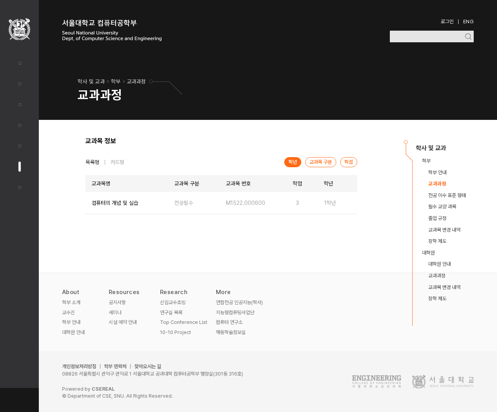

회색을 고르는 기준을
역할과 바탕에 연결하기
DS-010 확정 · 교과목 적용 확인색의 네 계열 구성은 DS-009로 정했다. 중립색의 배경·글자·경계 역할은 DS-010으로 확정했다. 주황과 입력 예시·보조 버튼 색은 유지한다. 추가 입력 초점 외곽선은 DS-012로 철회했다.
01. 같은 회색도 바탕에 따라 역할이 다르다
기본 면 · #ffffff
주요 글자 · #0a0a0a
설명 글자 · #404040
보조 정보 · #737373
교과목 번호, 날짜, 부가 설명
약하게 구분한 면 · #fafafa
본문 패널·카드·교차 행
기본 면에서 약하게 구분할 영역
보조 정보 · #737373
이 바탕에서 대비 약 4.54:1
묶음을 드러내는 면 · #f5f5f5
표 머리글·안내 구역·보조 컨트롤
정보나 행동이 묶여 있음을 보여준다.
보조 정보 · #525252
밝은 두 면보다 한 단계 짙게
어두운 큰 면 · #171717
주요 글자 · 흰색
보조 정보 · #a3a3a3
밝은 바탕과 같은 기준으로 바꾸지 않는다.
카테고리의 #1e1e1e도 기존 맥락으로 유지
| 역할 | 확정 값 | 적용 경계 |
|---|---|---|
| 밝은 면 | white / neutral-50 / neutral-100 | 기본 / 약한 구분 / 묶음. 기존 전용 면은 검토 없이 치환하지 않음. |
| 밝은 면의 글자 | 950 / 700 / 500 | 주요 / 설명 / 보조. 100·200 바탕의 작은 보조 정보는 600. |
| 어두운 큰 면의 글자 | white / neutral-400 | 900·850 바탕의 주요 / 보조. 밝은 면의 비활성 표현과 구분. |
| 내용 구분선 | neutral-200 / neutral-300 | 약한 구분 / 더 뚜렷한 경계. 입력 외곽선의 최종 규칙은 별도 검토. |
| 기존 예외 | neutral-75·800, 개별 어두운 값 | 현재 사용처를 유지하고 별도로 검토. 숫자가 가깝다고 합치지 않음. |
02. 실제로 달라지는 부분 · 교과목의 보조 정보
교과목 번호·학점·학년, 보기 방식과 영어 약어 설명의 연한 글자를 비교한다. #a3a3a3 → #737373만 바꿨다. 제목·배경·주황·크기·간격은 동일하다.

{kind=link}
비활성 컨트롤·어두운 바탕·장식에 쓰인 neutral-400은 그대로 둔다. 다른 페이지는 실제 역할과 배경을 대조한 뒤 적용한다. 전체 접근성 검증이나 앱 적용 완료를 의미하지 않는다.
검토 결과 · DS-010
사용자는 이 역할 구분과 보조 정보의 농도에 동의했다.
역할표를 DS에 확정하고, 공유 교과목 목록·보기 방식·영어 약어 설명에 적용했다. 한국어·영어 1280·390px에서 승인 이미지와 일치함을 확인했다. 적용 기록. 위 이미지는 결정에 사용한 비교 자료로 보존한다.